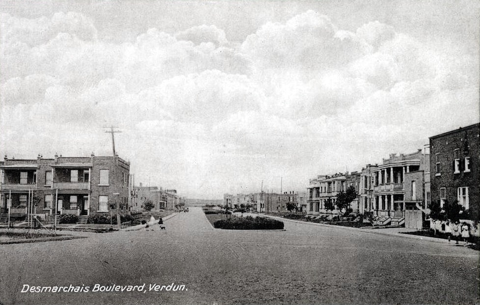

| Place | Local name | Phase years | Storeys | Roof | Window | Cladding | Garage |
|---|---|---|---|---|---|---|---|
| Le Plateau-Mont-Royal (borough of Montréal) | Triplex with exterior stair Le triplex avec escalier extérieur | 1880 – 1914 | 3 | flat | – | clay-brick-beige-brown | none |
| Le Plateau-Mont-Royal (borough of Montréal) | Triplex with interior stair Le triplex avec escalier intérieur | 1880 – 1914 | 3 | flat | – | clay-brick | none |
| Le Sud-Ouest (Montréal) | Duplex with exterior stair Le duplex avec escalier extérieur | 1900 – 1945 | 2 | flat | vertical-2to1 | clay-brick | none |
| Le Sud-Ouest (Montréal) | Duplex with interior stair Le duplex avec escalier intérieur | 1875 – 1945 | 2 | flat | vertical-2to1 | clay-brick, stone-rusticated, wood-clapboard | none |
| Le Sud-Ouest (Montréal) | Multiplex Le multiplex | 1900 – 1945 | 3 | flat | vertical-2to1 | clay-brick, stone-rusticated | none |
| Le Sud-Ouest (Montréal) | Raised duplex Le duplex surélevé | 1900 – 1945 | 2 | flat | square | clay-brick, cut-stone | underground |
| Le Sud-Ouest (Montréal) | Three-storey duplex Le duplex de trois étages | 1875 – 1945 | 3 | false-mansard | vertical-2to1 | clay-brick, stone-rusticated | none |
| Le Sud-Ouest (Montréal) | Triplex with exterior stair Le triplex avec escalier extérieur | 1900 – 1945 | 3 | flat | vertical-2to1 | clay-brick, stone-rusticated | none |
| Le Sud-Ouest (Montréal) | Triplex with interior stair Le triplex avec escalier intérieur | 1875 – 1945 | 3 | flat | vertical-2to1 | clay-brick, stone-rusticated | none |
| Lévis | Flat-roofed house Toit plat | 1900 – 1945 | 2–3 | flat | – | clay-brick, wood-clapboard, wood-shingle, asbestos-cement-tile | – |
| Mercier–Hochelaga-Maisonneuve (borough of Montréal) | Company workers' house of the Hudon mill, rue Saint-Germain La maison ouvrière de la filature Hudon, rue Saint-Germain | 1845 – 1883 | 2 | – | vertical | clay-brick | none |
| Mercier–Hochelaga-Maisonneuve (borough of Montréal) | Three-storey workers' plex L'habitation ouvrière de trois étages (« plex ») | 1883 – 1918 | 3 | flat | vertical | grey-limestone, clay-brick-red-brown | none |
| Québec City | Plex — superposed dwellings Plex | 1875 – 1930 | 2–4 | flat | vertical | clay-brick | – |
| Rosemont–La Petite-Patrie (borough of Montréal) | Duplex with exterior stair Duplex de brique avec escalier extérieur | 1885 – 1930 | 2 | flat | vertical | clay-brick-red, clay-brick-beige-brown | none |
| Rosemont–La Petite-Patrie (borough of Montréal) | Duplex with interior stair and paired entrances Duplex contigu à escalier intérieur, entrées jumelées | 1904 – 1940 | 2 | flat | vertical | clay-brick-red | none |
| Rosemont–La Petite-Patrie (borough of Montréal) | Semi-detached duplex with rear garage, Art déco manner Duplex jumelé d'inspiration Art déco, garage en fond de terrain | 1940 – 1960 | 2 | flat | vertical | clay-brick-red | detached |
| Rosemont–La Petite-Patrie (borough of Montréal) | Triplex with exterior stair Triplex de brique avec escalier extérieur | 1885 – 1930 | 3 | flat | vertical | clay-brick-red, clay-brick-beige-brown, grey-limestone | none |
| Saint-Lambert | Multi-dwelling building of plex type L'immeuble à logements multiples de type plex | 1875 – 1930 | 2–3 | flat | vertical | clay-brick | none |
| Trois-Rivières | Immeuble à logements — the plex of superposed flats L'immeuble à logements / l'immeuble de type « plex » | 1907 – 1945 | 2–3 | flat | vertical | clay-brick, concrete-block | none |
| Verdun (borough of Montréal) | Row duplex of the 1950s Le duplex en rangée d'après 1950 | 1950 – 2002 | 2 | flat | – | clay-brick, stone | none |
| Verdun (borough of Montréal) | Three-storey plex with exterior stair L'immeuble de trois étages avec escalier extérieur | 1900 – 1930 | 3 | flat | vertical | clay-brick, stone | none |
| Verdun (borough of Montréal) | Two semi-detached duplexes, or a three-dwelling building, with deep front balconies L'ensemble de deux duplex jumelés ou à trois logements | 1900 – 1930 | 2 | flat | vertical | clay-brick | none |
| Villeray–Saint-Michel–Parc-Extension | Plex of the early 20th century Plex du début du 20e siècle | 1915 – 1940 | 3 | flat | vertical | clay-brick, stone | none |
| Villeray–Saint-Michel–Parc-Extension | Plex of the mid-20th century Plex du milieu du 20e siècle | 1940 – 1960 | 3 | flat | vertical | clay-brick, stone | none |
| Villeray–Saint-Michel–Parc-Extension | Plex of the second half of the 20th century — the « plex italien » Plex de la seconde moitié du 20e siècle | 1960 – 1980 | 2 | flat | horizontal | clay-brick, stone | underground |
| Westmount | Greystone triplex with exterior stair Triplex en pierre grise à escalier extérieur | 1885 – 1900 | – | – | vertical | montreal-greystone | – |


